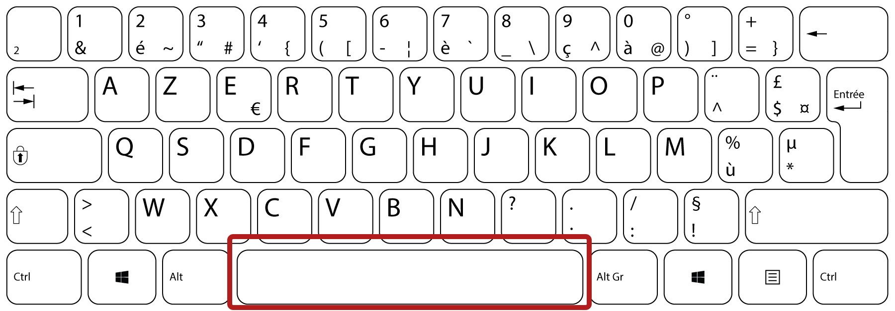
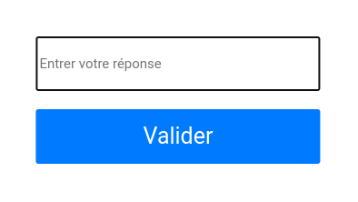

<div *ngIf="dataFetched">
    <div [ngSwitch]="phase">

        <div *ngSwitchCase="-1">
            <form [formGroup]="userForm" (ngSubmit)="saveUserData()">
                <div class="form-group">
                    <label for="name">NOM Prénom :</label>
                    <input formControlName="name" type="text" class="form-control" id="name" placeholder="NOM Prénom">
                </div>
                <div *ngIf="name?.invalid && (name?.dirty || name?.touched)" class="input-feedback">
                    <small *ngIf="name?.errors?.['required']" class="text-danger input-alert">Veuillez remplir ce champ</small>
                </div>

                <div class="form-group">
                    <label for="age">Age :</label>
                    <input formControlName="age" type="number" class="form-control" id="age" min="1" max="115">
                </div>
                <div class="form-group">
                    <label for="sex">Sexe :</label>
                    <select formControlName="sex" class="form-control" id="sex">
                    <option>H</option>
                    <option>F</option>
                    <option>Autre</option>
                    </select>
                </div>
                <button type="submit" class="btn btn-primary">Valider</button>
            </form>
        </div>

        <div *ngSwitchCase="0" [ngSwitch]="step">
            <div *ngSwitchCase="0">
                <div class="large-container">
                    <p>Vous allez passer un test d’identification d’icônes. Nous allons vous présenter des icônes, une par une. Votre tâche sera de les nommer par ce qu’elles vous évoquent.</p>
                </div>
                
                <p class="red-text">Icône a identifier</p>
                <div class="thin-container">
                    <p>Appuyez sur espace pour passer à la suite</p>
                </div>
            </div>
        
            <div *ngSwitchCase="1">
                <div class="large-container">
                    <p>Lorsqu’une icône apparaît, vous devez l’identifier le plus rapidement possible. Dès que vous avez associé un ou des mots à l’icône, vous devez appuyer sur la touche « espace » de votre clavier.
                    Il est impératif que vous n’appuyiez sur « espace » qu’une fois après avoir identifié l’icône. </p>
                </div>
                
            </div>
            
            <div *ngSwitchCase="2">
                <div class="large-container">
                    <p>Lorsque vous appuyez sur  « espace », une zone de texte apparaît. Vous pouvez alors y écrire le nom que vous avez trouvé pour cette icône.
                    Attention, certaines icônes peuvent être abstraites mais vous devez toujours entrer une réponse.  </p>
                </div>
                <p class="little-text">Appercu de la zone de texte :</p>
                
            </div>
                
            <div *ngSwitchCase="3">
                <div class="large-container">
                    <p>Lorsque vous souhaitez valider votre réponse et que vous êtes prêt, appuyez de nouveau sur espace. Un point rouge apparaîtra au centre de votre écran. Fixez-le. C’est à cet endroit qu’apparaîtra la nouvelle icône à identifier.</p>
                </div>
                <span class="red-circle"></span>
            </div>
                
            <div *ngSwitchCase="4">
                <div class="large-container">
                    <p> Vous aurez {{files.length}} icônes à nommer. Vous pourrez suivre votre avancement tout au long du test.
                        Une fois le test commencé, veillez à toujours garder le doigt au dessus de la touche espace.
                        
                        Vous allez effectuer un entraînement avant de passer au test.</p>
                </div>
                
                <div class="large-container" *ngIf="dataFetched">
                    <div class="vertical-flex">
                        <p>Voici un exemple d’icône à identifier</p>
                        
                        <p>La réponse attendue est: {{exempleIcon1.split('.')[0]}}</p>
                    </div>
                </div>

                <button class="button" (click)="incrementStep()"><p>Accéder à l’entraînement</p></button>
                </div>
            </div>
            <button id="next" class="button" *ngIf="step <= 3 && phase === 0" (click)="incrementStep()"><p>Suivant ></p></button>


        <div *ngSwitchCase="1" [ngSwitch]="step">
            <div *ngSwitchCase="0">
                <p class="full-container">Entrainement</p>
                <p class="countdown">{{rebourdStrings[rebourdIndex]}}</p>
            </div>

            <div *ngSwitchCase="1" class="container-icon">
                <app-icon [file]="trainingIcons[iconTrainingIndex]" [isTraining]="true" (switchIcon)="nextIcon($event)"></app-icon>
            </div>


            <div *ngSwitchCase="2">
                <p class="full-container">Fin de l’entraînement</p>
                <p class="width-60">Appuyez sur espace si vous êtes prêt à passer au test.
                    Cliquez sur le bouton “Retour aux consignes” si vous ne vous sentez pas prêt.
                </p>
                <p class="width-60">
                    <b>
                        Rappels:
                        Gardez le doigt au dessus de la touche espace tout au long du test
                        N’appuyez sur espace que quand vous avez décidé quoi répondre
                    </b>
                </p>
                <div class="bottom-container">
                    <button class="back-button" (click)="resetStepPhase()"><p>Retour au consignes</p></button>
                    <button class="button" (click)="incrementStep()"><p>Passer au test</p></button>
                </div>
            </div>
        </div>

        <div *ngSwitchCase="2" [ngSwitch]="step">

            <div *ngSwitchCase="0">
                <p class="full-container">TEST</p>
                <p class="countdown" >{{rebourdStrings[rebourdIndex]}}</p>
            </div>

            <div *ngSwitchCase="1" class="container-icon">
                <app-icon [file]="filesCopy[iconIndex]" [isTraining]="false" (switchIcon)="nextIcon($event)"></app-icon>
                <p class="progress-number">{{ files.length - filesCopy.length }}/{{files.length}}</p>
                <mat-progress-bar class="progress" mode="determinate" [value]="progress"></mat-progress-bar>
            </div>
        </div>

        <div *ngSwitchCase="3" [ngSwitch]="step">

            <div *ngSwitchCase="0">
                <p id="thanks">Merci d'avoir participé !</p>

                <button class="button" (click)="newUser()"><p>Faire passer quelqu'un d'autre ?</p></button>
            </div> 
        </div>
    </div>